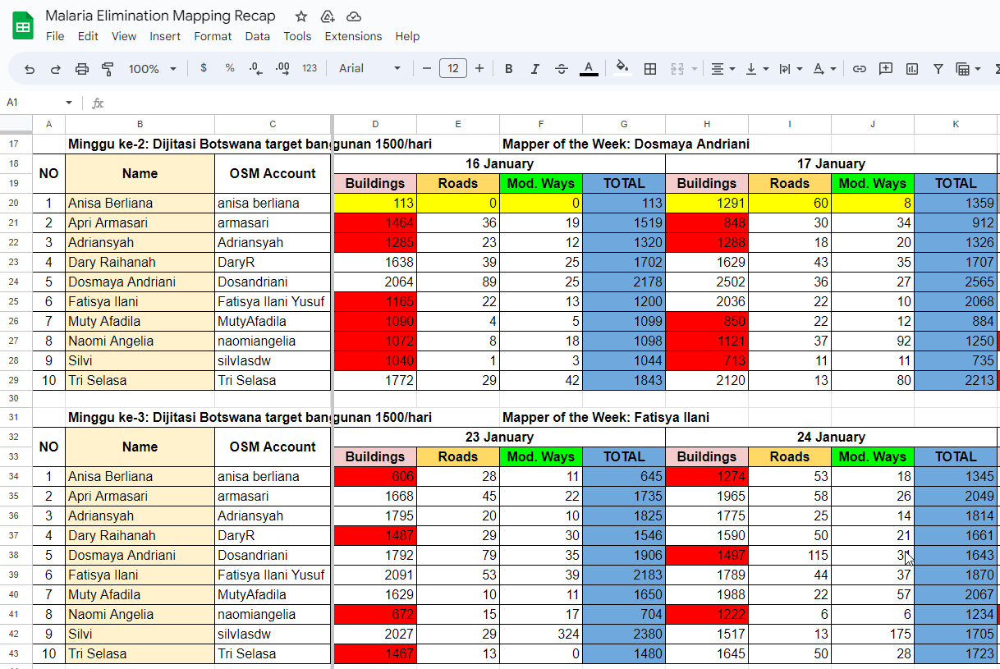
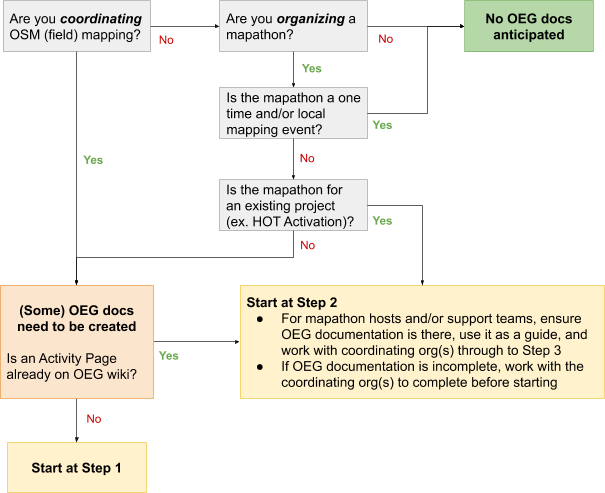

3.2. Edition Organisée sur OSM
Objectifs du cours
Cette section vous informera sur la manière d’organiser les activités d’édition d’OSM. À la fin de cette section, vous devriez être en mesure de :
- Comprendre les considérations relatives à la gestion et à l’approvisionnement en cartographes pour une édition organisée.
- Apprendre les directives et la conformité de l’édition organisée d’OSM.
- Être en mesure de mettre en place un système d’orientation pour l’édition organisée d’OSM
Activités d’apprentissage
Avant de commencer tout projet de cartographie, il est important d’évaluer et, si nécessaire, de mettre à jour la carte de base d’OpenStreetMap par le biais de la cartographie à distance. Ce processus de cartographie à distance permet de s’assurer que les bâtiments et les routes utilisés lors d’une phase de cartographie sur le terrain sont à jour, améliorant ainsi la qualité et l’efficacité des efforts de cartographie sur le terrain. Par exemple, grâce à la cartographie à distance, votre équipe peut identifier des bâtiments ou des villages entiers qui n’auraient pas été repérés autrement.
Bien que le déroulement prévu du projet influence la zone à cartographier à distance, il est important de noter que le budget et le temps disponibles peuvent imposer des restrictions sur ce qu’il est possible de numériser. Ainsi, la cartographie à distance peut également influencer le flux de travail, ce qui fait du plan de cartographie à distance une partie importante du processus de planification.
Trouver votre cartographe à distance
La cartographie à distance demande du temps et des efforts. Ce processus peut prendre plusieurs formes différentes, allant d’une réalisation rapide avec quelques cartographes bénévoles pour une petite zone à une équipe organisée et rémunérée travaillant pendant plusieurs mois à la réalisation d’une région. Il existe quatre options d’approvisionnement que vous pouvez envisager lorsque vous souhaitez organiser vos efforts de cartographie :
- La communauté globale HOT/OSM: La communauté mondiale HOT/OSM est la première source de soutien à vos efforts de cartographie. En août 2023, 454 800 bénévoles du monde entier nous ont soutenus et ont cartographié plus de 149 millions de bâtiments sur le gestionnaire de tâches de HOT pour soutenir les efforts de cartographie dans le monde entier.
- Équipe de numérisation engagée (5+ personnes): Pour certains projets, la meilleure façon de répondre aux besoins est d’engager une petite équipe de numériseurs spécialisés pour cartographier systématiquement une zone. En général, cette équipe travaille en personne, ce qui permet d’assurer une formation et une assurance qualité cohérentes. Cependant, il est possible d’utiliser une équipe de cartographes rémunérés travaillant à distance si les cartographes sont expérimentés et n’ont pas besoin d’une formation approfondie. Nous vous recommandons, lorsque vous cherchez à recruter une équipe de cartographes, de vous adresser à la communauté locale d’OSM en lui proposant ces opportunités.
- Approche mixte (numériseurs rémunérés et communauté mondiale): Lorsque des délais sont prévus mais que l’ampleur du travail est trop importante pour votre équipe, une solution consiste à faire appel à des numériseurs rémunérés et à la communauté mondiale.
- Tenir des Mapathons: L’organisation d’une série de Mapathons est une autre option qui allie l’utilisation de volontaires à certains des avantages d’une équipe dédiée. Ces mapathons rassemblent généralement des groupes de bénévoles (allant des étudiants universitaires aux événements de bénévolat d’entreprise) pour cartographier ensemble une tâche en personne.
Les ressources et le temps nécessaires pour cartographier votre zone d’intérêt dépendent des cinq facteurs suivants :
- Taille de la zone d’intérêt: Cartographiez-vous une ville ou un district entier?
- Calendrier: La zone doit-elle être cartographiée en quelques semaines? Mois?
- Ressources nécessaires : Votre projet dispose-t-il d’un budget pour rémunérer les numériseurs et les validateurs?
- Qualité : Quelles sont les ressources dont vous disposez pour garantir la qualité des données cartographiées? Les données doivent-elles être immédiatement de haute qualité ou les nouveaux cartographes ont-ils la possibilité de faire des erreurs?_
- Entités et attributs : Votre projet ne nécessite-t-il que la cartographie des bâtiments? Des routes? Des caractéristiques (telles que roof:material) seront-elles ajoutées par des cartographes à distance?
| Facteurs | Communauté Global HOT/OSM | Equipe de numérisateur engagée (5+ personnes) | Mixte (Numériseur rémunéré & Communauté OSM) | Mapathons |
|---|---|---|---|---|
| Taille de zone d’intérêt | Peut couvrir toute taille d’efforts de numérisation (quartier ou pays) | Ils peuvent couvrir n’importe quelle taille, car ils peuvent couvrir des zones plus étendues sur une période plus courte. | Si vous disposez d’une petite équipe, vous pouvez vous associer à des volontaires internationaux pour couvrir une plus grande zone | recommandé uniquement pour les petites régions, car cela dépend du nombre de personnes présentes, de leurs compétences et de la durée du mapathon |
| Calendrier | Convient pour une réponse rapide (à la suite d’une catastrophe ou de besoins humanitaires). | Favorable aux projets dont le délai est limité. Les numériseurs nouvellement formés peuvent cartographier 500 à 1000 bâtiments par jour en fonction de la densité et de la qualité de l’imagerie. | En incluant des numériseurs rémunérés, cette méthode permet de maintenir le projet en développement tout en s’appuyant sur la communauté mondiale. | Cette option peut être plus rapide que de s’appuyer uniquement sur la communauté mondiale, mais plus lente que de disposer d’une équipe de volontaires dévoués. |
| Ressources | Gratuit | Nécessité de fixer un budget pour l’embauche de l’équipe. Il peut également être nécessaire de fournir un espace de travail avec une connexion internet permanente. | Le budget est moins important que celui d’une équipe complète, mais il faudra probablement fournir un espace de travail dédié et une connexion internet permanente. | Le budget est moins important que celui d’une équipe en personne, mais l’espace, l’internet et les rafraîchissements doivent être pris en charge. |
| Qualité | Il est difficile de contrôler la qualité des données immédiatement cartographiées. Effort supplémentaire pour réviser et corriger les erreurs | Plus facile à former et à contrôler | En incluant des numériseurs rémunérés, votre équipe peut choisir de se concentrer sur la validation des efforts de la communauté mondiale et d’augmenter la cohérence des éditions cartographiques de qualité. | Les mapathons peuvent exiger plus d’efforts en matière de validation de la cartographie. |
| Entités et attributs | Parfait pour les tâches simples (construction de cartes). Des fonctionnalités supplémentaires peuvent être envisagées si elles ne sont pas complexes et ne nécessitent pas de vérifications supplémentaires par la suite. | C’est une bonne chose si vous avez des caractéristiques spéciales ou des étiquettes qui doivent être ajoutées. Le fait de disposer d’un contexte local est également très utile pour ajouter des caractéristiques et des attributs uniques. | Vous pouvez vous appuyer sur la communauté mondiale pour développer la carte de base, puis votre équipe rémunérée peut ajouter ces fonctionnalités ultérieurement. Vous pouvez également faire appel à votre petite équipe pour valider les caractéristiques et attributs spéciaux ajoutés par la communauté mondiale.. | Les mapathons permettent de mieux former et gérer les volontaires qui ajoutent des caractéristiques ou des attributs uniques. Cependant, comme pour la qualité des données, la validation sera plus lourde que si l’on faisait appel à une équipe spécialisée. |
Gérez vos efforts de digitalisation
Une fois que vous avez décidé de la manière dont vous allez constituer votre équipe de cartographes (rémunérés ou non, locaux ou distants), vous devez établir un plan et rassembler des ressources. Voici une liste de questions à se poser:
- Quelle sera la structure de votre équipe? Nous recommandons d’avoir un validateur dédié pour cinq numériseurs.
- Avez-vous entrainé vos validateurs? Notre matériel de formation pour les validateurs est disponible ici.
- Comment allez-vous suivre l’évolution de votre cartographie? Lors de la mise en place d’un grand nombre de tâches de cartographie, il est utile de créer un outil de suivi pour contrôler la progression de toutes les tâches.

Procédures de conformité d’édition organisées
La Fondation OSM a mis en place des lignes directrices pour l’édition organisée afin de documenter les efforts d’édition organisée. Bien qu’il ne s’agisse pas d’une exigence ou d’une politique, HOT encourage vivement tous les groupes à se conformer à ces procédures lorsqu’elles sont applicables. Pour simplifier et faciliter la compréhension de ces directives, HOT a élaboré le guide suivant, mais HOT n’est pas responsable du respect de ces directives.
Ce qui suit est basé sur les procédures suggérées par HOT pour se conformer aux directives d’édition organisée (OEG) - en date de juin 2019
But
Quel(s) problème(s) l’OEG cherche-t-elle à résoudre, et comment pouvons-nous nous conformer au mieux à ces préoccupations et y répondre?
- Transparence - l’OEG tente de permettre aux cartographes locaux de savoir plus facilement quelles organisations éditent dans leur région.
- Communication - l’OEG tente de faciliter la communication des mappeurs locaux avec les éditeurs organisés et les équipes d’édition.
- Résolution des conflits - l’OEG tente de fournir une base de coordination, ainsi qu’un mécanisme permettant aux communautés locales de déposer une plainte contre une activité de montage organisée.
Documentation
- L’OEG officiel est disponible ici: https://osmfoundation.org/wiki/Organised_Editing_Guidelines
- La page officielle des activités de l’OEG ici: https://wiki.openstreetmap.org/wiki/Organised_Editing/Activities
- La page des activités de HOT OEG ici: https://wiki.openstreetmap.org/wiki/Organised_Editing/Activities/Humanitarian_OpenStreetMap_Team
Exigences
Qu’exigent exactement les lignes directrices relatives à l’édition organisée? (OEG)?
Documentation du projet dans le OSM Wiki:
- Organisation et coordonnées
- Description et lien à l’organisation
- Un moyen de contacter le chef de projet ou l’équipe
- Détails du projet
- Le but et l’objectif de l’activité
- Le calendrier de l’activité
- les outils et sources de données non standard utilisés, ainsi que leurs conditions d’utilisation
- liens permettant à la communauté d’accéder à des outils ou à des sources de données non standards
- Commentaire standard de l’ensemble des modifications
- Hashtag spécifique pour le suivi
- lien vers l’activité d’édition organisée connexe
- information sur l’équipe
- les comptes des personnes participantes qui souhaitent être identifiées, avec tous les détails qu’elles souhaitent inclure
- si les participants recevront du matériel de formation ou des instructions écrites, une copie de ce matériel ou un lien vers celui-ci
- liens vers l’organisation ou les organisations d’édition et l’activité ou les activités sur le profil de l’utilisateur
- une formation suffisante pour le projet (c’est-à-dire les schémas d’étiquetage locaux, etc.)
- la réussite ou la performance des participants sera mesurée d’une manière ou d’une autre, une description des paramètres utilisés à cette fin sera fournie
Exécution et suivi du projet
- Communication avec la communauté locale
- Préavis de 2 semaines pour les projets non urgents, forum ouvert/liste de diffusion
- Réponse dans les deux jours ouvrables aux demandes de renseignements de la communauté tout au long du projet
- Des plans pour un " nettoyage post-événement " afin de valider les éditions, en particulier si l’activité introduit de nouveaux contributeurs à OpenStreetMap.
- Une fois l’activité terminée, ou au moins une fois par mois pour les efforts continus, une description des résultats.
Est-ce que cela s’applique à moi?

Common Elements: Les éléments communs des projets peuvent être documentés conjointement entre les projets.
Pour HOT, la plupart des projets relèvent de la conformité à l’OEG et partageront ce qui suit :
- L’organisation et les informations de contact.
- Des instructions dans une certaine mesure, c’est-à-dire une cartographie de base couverte par le matériel LearnOSM.
- Un processus de validation quelque peu standard ; bien entendu, soyez explicite au sujet de toute vérification sur le terrain.
- Un ensemble d’outils quelque peu normalisé (par exemple, TM pour les données à distance, ODK pour les données terrain).
- Des rapports/descriptions/nouvelles à un emplacement central (c’est-à-dire le site web de HOT).
Procédures étapes par étapes
Pré-lancement du projet
- Avoir au moins un squelette de wiki/page web prêt à être partagé avec la communauté locale
- Comment éditer le wiki: https://learnosm.org/en/intermediate/editing-the-wiki/
- voir https://wiki.openstreetmap.org/wiki/Template:Activatio pour un modèle/exemple de pages wiki sur l’activation
- Comment créer des projets de sites web HOT
- Contact local pris au minimum 2 semaines avant le lancement ; par le biais de leur liste de diffusion ouverte, ou de leur forum, le plus susceptible de contacter les principaux leaders de la communauté
- Consultez ici les listes de diffusion: https://lists.openstreetmap.org/listinfo
- Recherchez le wiki par pays, car d’autres canaux de communication peuvent y être répertoriés, et parfois des points de contact individuels
- Et essayez https://github.com/osmlab/osm-community-index
- Ce n’est qu’après avoir épuisé ces options qu’il est acceptable de supposer qu’il n’y a pas de communauté locale
- Configurateur des profils d’utilisateur OSM:
- Envisager d’enregistrer l’équipe sur OSM avec des noms d’utilisateur désignés
- Peut encore être personnalisé, comme JohnDoe_Validator, JohnDoe_Mapper, etc.
- Envisagez également d’utiliser le(s) compte(s) de messagerie de l’organisation 2. Idéalement, le chef de projet ou le chef d’équipe devrait recevoir ou pouvoir accéder à tous les messages. Si un cartographe part, mais reçoit ensuite des messages de la communauté, vous devrez être en mesure d’y répondre
- Tous les profils doivent au moins comporter un lien vers la page du projet de l’OEG, le site web de l’organisation ou (pour HOT) de préférence un lien vers le profil de l’individu sur le site web
Lancement du projet
- S’assurer que le projet a une entrée dans Page d’activité de l’OEG
- Avoir les détails requis de votre plan dans une page wiki ou (pour HOT) une page de projet du site web hotosm.org
- Désigner une ou deux personnes qui se chargeront de répondre rapidement à tout le trafic de la communauté (2 jours ouvrables maximum)
- Les rapports périodiques sont généralement traités par le biais d’un blog (pour HOT), mais on peut également envisager de publier les résultats sur des wikis, etc.
Achèvement du projet
- S’assurer qu’il existe un plan pour terminer toute validation restante et que ce plan est communiqué à la communauté locale.
- Grâce à une communication constante avec la communauté locale tout au long du projet, il devrait être assez facile et direct de déterminer le moment où le projet sera terminé et où la communauté sera à nouveau autonome, avec des conduits vers les organisations du projet.
- Avant de clôturer votre projet, assurez-vous qu’un article de blog ou un rapport final documente la clôture.
- Le document/rapport ne doit pas nécessairement être un rapport complet demandé par un donateur, par exemple, mais généralement les résultats : réussis ou non, leçons tirées
- Enfin, déplacez votre ligne dans le tableau des activités de l’OEG d’Actif à Précédent
[Quiz] Testez vos connaissances
-
Quelles sont les sources de cartographie dont vous avez besoin si vous voulez cartographier dix districts, avec des attributs et des informations détaillées, qui devraient être cartographiés en deux mois
a. Mapathon
b. Communauté mondiale HOT/OSM
c. Équipe de numériseurs dévoués (+5 personnes)
d. Personnel interne de HOT
-
Nous devons mettre en place une tâche de numérisation simple pour la communauté mondiale HOT/OSM. Quelle option est considérée comme un attribut de numérisation simple?
a. Point d’intérêt
b. Bâtiments
c. Réseaux routiers avec balises supplémentaires
d. Rivière, bâtiments et installations sanitaires générales
-
La Fondation OSM a publié un document de conformité pour l’édition organisée à l’intention des organisations/entreprises qui mènent des efforts de numérisation avec une grande équipe de numérisés. Quels sont les aspects qu’ils doivent enregistrer dans le wiki OSM?
a. Liste des numériseurs, courriel actif des coordinateurs/gestionnaires de projet et taux de rémunération
b. Liste des numériseurs, numéro de téléphone actif du coordinateur/gestionnaire du projet et aperçu du projet
c. Liste des numériseurs, zone du projet, vue d’ensemble du projet et liste des commentaires du jeu de modifications d. Toutes les réponses sont correctes
Answer: 1.C | 2.B | 3.C
Liste de contrôle des activités
Vous savez maintenant comment organiser votre projet de cartographie. À la fin de cette section, vous devriez être en mesure de:
- Déterminer la taille de la cartographie, l’effort et le type de sourcing.
- Comprendre la différence entre chaque option de sourcing
- Suivre l’effort de numérisation
- Mettre en place un document de conformité pour l’édition organisée
Ressources complémentaires
Guide de gestion des campagnes